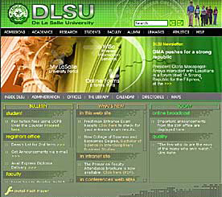

| New
DLSU Manila Website
by:
Precious Anne L. Taliwaga

The Redesigned DLSU-Manila
We want to join the bandwagon and write about the newest thing
that has evoked much reaction from the La Sallian community,
the new DLSU-Manila website. I hope we are in unison in saying
that this is the direction we want to steer our projects to
– utilize the best technology that we can benefit most
from, and introduce it to our public so they will know where
we stand in technology today. [whole
story]
My.LaSalle
Portal Update
by:
Precious Anne L. Taliwaga
The
new interface of My.LaSalle portal is finally taking shape.
Using ASP technology for the new template, it is now easier
to maintain multiple static web pages. This gives us more
room to enhance its features as the need arises. [whole
story]
Let's
hear it from the Newbies on the block
Irwin
Jurilla (CFO)
I
have already worked for several companies and in my experience,
the environment in La Salle is different. Students avail of
IT services everyday. As users, they are unpredictable and
some post threats to the network security.
ITC staff is a pleasant company as all are very friendly.
They are nice to work with. They always give the best of themselves
to serve the academic community better. It’s great to
be a part of this institution.-Irwin
Jurilla
Precious
Anne Taliwaga (DOCU)
Seldom
does one find a workplace wherein the best gadgets are within
reach with the easiest people to work with. Needless to say
that here in ITC, the people are very competent, accommodating
and approachable. You guys made me feel that I belong right
on my first day. Becoming part of the group makes me understand
why it is regarded in the highest esteem both inside and outside
of the University. - Precious Anne Taliwaga
Lloyd
Michel A Vargas(CF0)
Good
day! All i can say is that the ITC guys are all cool and easy
to get along with and when it comes to my work, I'm very fortunate
to have a group of people that are really supportive. I'm
looking forward to contribute to this team in any way i could.
Maraming salamat po.- Lloyd
Vargas
|